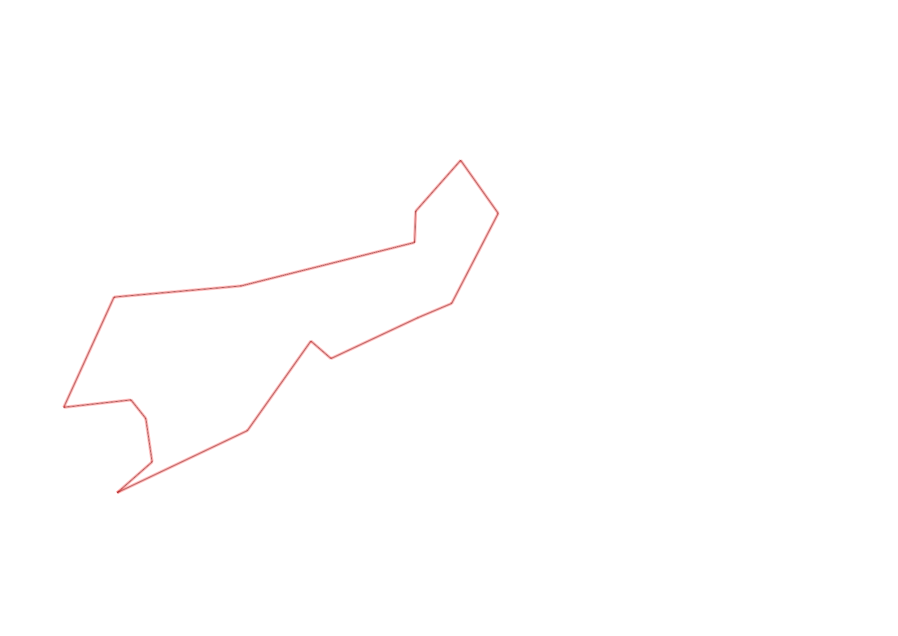
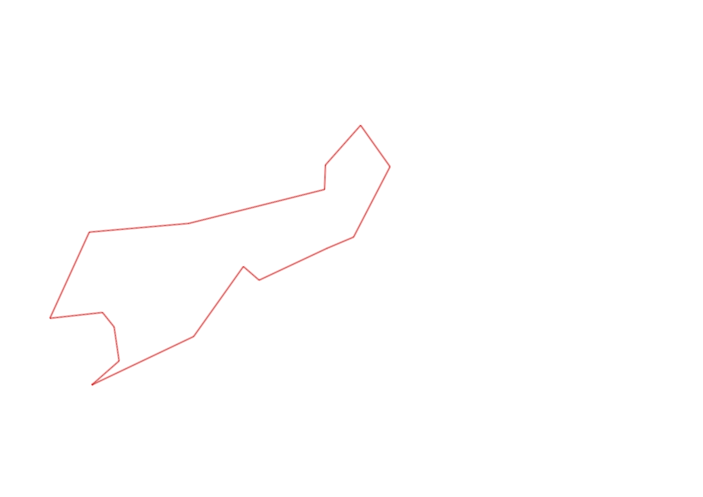

| Control |
Points |
Time Punched |
Distance |
Your Time |
Pace |
Place |
Fastest Time |
Median Time |
% Behind Fastest |
| 127 |
20 |
|
0.06 |
0:00:42 |
11:40 |
1 / 1 |
0:00:42 |
0:00:42 |
0% |
| 35 |
30 |
|
0.23 |
0:12:41 |
55:08 |
1 / 1 |
0:12:41 |
0:12:41 |
0% |
| 47 |
40 |
|
0.09 |
0:03:17 |
36:28 |
1 / 1 |
0:03:17 |
0:03:17 |
0% |
| 123 |
20 |
|
0.24 |
0:03:43 |
15:29 |
1 / 1 |
0:03:43 |
0:03:43 |
0% |
| 34 |
30 |
|
0.15 |
0:05:03 |
33:40 |
2 / 2 |
0:04:57 |
0:05:00 |
2% |
| 67 |
60 |
|
0.16 |
0:03:22 |
21:02 |
3 / 3 |
0:01:20 |
0:01:43 |
152% |
| 33 |
30 |
|
0.07 |
0:02:51 |
40:42 |
1 / 1 |
0:02:51 |
0:02:51 |
0% |
| 58 |
50 |
|
0.42 |
0:05:53 |
14:00 |
1 / 1 |
0:05:53 |
0:05:53 |
0% |
| 32 |
30 |
|
0.3 |
0:01:55 |
06:23 |
4 / 4 |
0:00:58 |
0:01:14 |
98% |
| 53 |
50 |
|
0.29 |
0:06:23 |
22:00 |
1 / 1 |
0:06:23 |
0:06:23 |
0% |
| 45 |
40 |
|
0.16 |
0:01:33 |
09:41 |
5 / 6 |
0:00:59 |
0:01:04 |
57% |
| 62 |
60 |
|
0.06 |
0:01:30 |
25:00 |
3 / 6 |
0:00:39 |
0:01:40 |
130% |
| 41 |
40 |
|
0.1 |
0:01:20 |
13:20 |
1 / 2 |
0:01:20 |
0:02:00 |
0% |
| 40 |
40 |
|
0.11 |
0:01:08 |
10:18 |
2 / 4 |
0:00:47 |
0:01:08 |
44% |
| 60 |
60 |
|
0.34 |
0:02:23 |
07:00 |
1 / 1 |
0:02:23 |
0:02:23 |
0% |
| Finish |
0 |
|
0.26 |
0:02:23 |
09:10 |
2 / 2 |
0:01:44 |
0:02:03 |
37% |
Total Distance Covered: 3.04km
Points Scored: 600
Late Penalty: 0
Final Score: 600
Total Time: 0hours 56minutes 7seconds
Efficiency: 197.37 points/km
 
